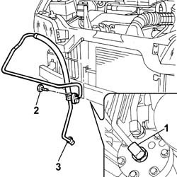

5040A50 PIPE FROM COMPRESSOR TO AIR CONDITIONER CONDENSER - R+R
- Path
- Procedures > 50 AUXILIARY UNITS > 5040 AIR CONDITIONING CASING AND COMPONENTS > 5040A CHECKING OPERATION OF AIR CONDITIONER (TEMPERATURE) > 5040A50 PIPE FROM COMPRESSOR TO AIR CONDITIONER CONDENSER - R+R
- Kind
- repair procedure (removal / refitting; the operation number is the code)
- Applies to
- engines: 2.8 JTD 8V; all production periods
- Interactive page
- https://sloeber94.github.io/elrnDB-fDct/en/#/244001272
Applies to: engines: 2.8 JTD 8V; all production periods
 Removing
Removing
 Refitting
RefittingOp. 0010T84 COOLANT FOR AIR CONDITIONING SYSTEM DEHYDRATE AND RECHARGE
- Disconnect the negative battery terminal.
Op. 4450B12 FRONT OR REAR WHEELS (TWO) - R+R
Op. 7055B64 LH OR RH REFLECTOR(ONE) ON REAR BUMPERS - R R
- < R1 > [both sides]
Op. 7055B54 UNDER-ENGINE GUARD - R R
1. Undo the connector for the pipe on the compressor.
2. Undo the bolts fixing the pipe to the condenser.
- Undo the nut fixing the pipe to the mounting bracket.
3. Remove the pipe from the compressor to the condenser.

Applies to: engines: 2.8 JTD 8V; all production periods
Refitting
Removing- Connect the pipe to the compressor tightening the connector to the recommended torque.
 | Value - daNm | Fastening | Component | Ø |
|---|---|---|---|---|
. | 4,0 | Connector | PIPE COMPRESSOR/CONDENSER (A.C.) | - |
- Connect the pipe to the condenser tightening the fixing bolt.
- Secure the pipe to the mounting bracket tightening the fixing nut.
Op. 7055B54 UNDER-ENGINE GUARD - R R
Op. 7055B64 LH OR RH REFLECTOR(ONE) ON REAR BUMPERS - R R
- < R1 > [both sides]
Op. 4450B12 FRONT OR REAR WHEELS (TWO) - R+R
- Connect the negative battery terminal.
Op. 0010T84 COOLANT FOR AIR CONDITIONING SYSTEM DEHYDRATE AND RECHARGE